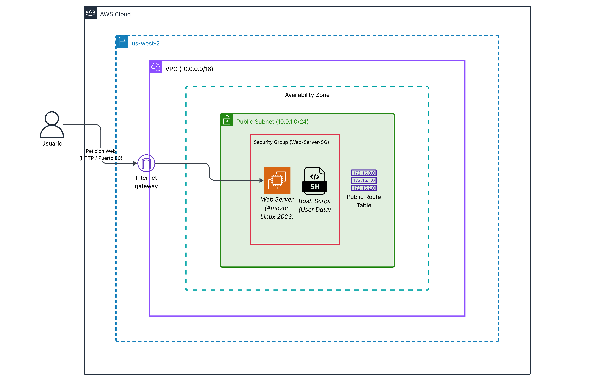

descriptionDespliegue Automatizado de Servidores Web en AWS
AWS Cloud & DevOpsDiseño de una arquitectura de red aislada (VPC) y aprovisionamiento automático (bootstrapping) de un servidor web Apache sobre Amazon Linux utilizando scripts de automatización Bash. Reduce el tiempo de configuración inicial de infraestructura a cero.
AWS
VPC
EC2
IGW
Bash
Linux